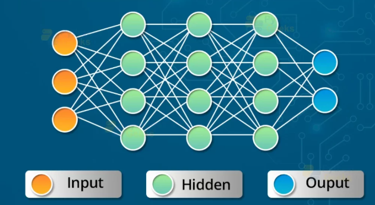
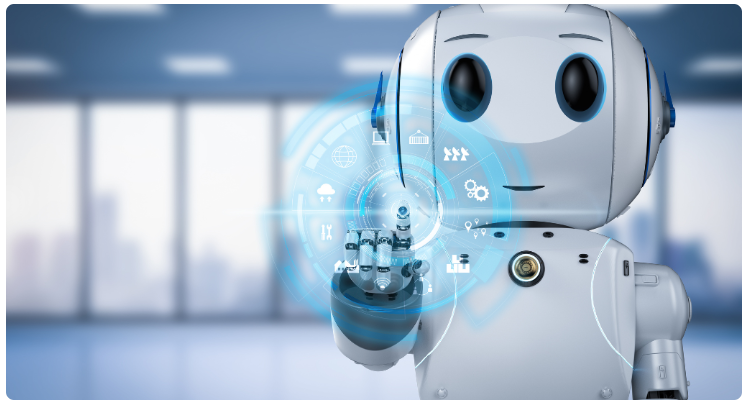

Industrial Automation Tools and Technologies
A wide range of tools are required for industrial automation. They include various control systems that incorporate different devices and systems impacting aspects of the manufacturing process. The key tools are explained here.
Programmable Logic Controller (PLC) - Multiple Input and Output Arrangement
Programmable Logic Controller (PLC) showcases a great impact on automation. As the name indicates, it is a programmable logic controller. We can control the devices and easily switch from one process to another through it. It is possible because you can program it logically, thus it gets the name programmable logic controller.
You can program as well as control using it. It is majorly designed for multiple input and output arrangements, and it can withstand extreme temperatures with resistance to vibration and impact.
 - Multiple input and output arrangement.png)
Human Machine Interface (HMI) - Helps to Control Industrial Automation Equipment
The Human Machine Interface (HMI) includes the electronics that are required to signal and control the state of industrial automation equipment. These interface products can range from a basic LED status indicator to a 2-inch TFT panel with a touch-screen interface.
To use HMI, requirements include robustness, resistance to water, dust, and moisture, and the ability to operate in a wide range of temperatures. In some environments, these interfaces must provide Ingress Protection (IP) ratings up to IP65, IP67, and IP68.
 – Helps to Control industrial automation equipments.png)
Artificial Neural Network (ANN) - Responsible for Processing Information
Artificial Neural Network (ANN) tool is also known as the neural network. It is more like a mathematical model and is responsible for processing information coming from biological networks. Structures of ANN can be changed based on both external and internal data fed into the learning phase of the system.
Applications of this automation tool include financial applications and data mining.

Distributed Control System (DCS) - Monitoring Networks
Distributed Control System (DCS) is one of the industrial automation systems favored by several processes in the manufacturing industry. It contains one or more controller elements distributed in the system.
Broad categories of application of DCS include electrical power grids and generation plants; traffic signals; water management systems; environmental control systems; oil refining and chemical plants; pharmaceutical manufacturing; bulk oil carrier ships; and sensor networks.
 - Monitoring Networks.png)
Robotics
Robotics have been used everywhere around us. From surgery robots to entertainment robots, they help people complete complex tasks. They have made our lives much easier and improved its quality.
They can be used in performing various application tasks such as assembling, painting, welding, repairing, and more. The role of industrial robotic systems in the production process is vital, as their work ranges from assembly to internal treatments and testing.
